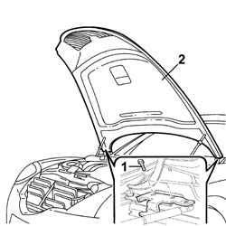

7210E20 BONNET
- Path
- Procedures > 72 panels and frames > 7210 REMOVING REFITTING > 7210E EXTERNAL PARTS > 7210E20 BONNET
- Kind
- repair procedure (removal / refitting; the operation number is the code)
- Applies to
- all engines; all production periods
- Interactive page
- https://sloeber94.github.io/elrnDB-lThss/en/#/501152
Applies to: all engines; all production periods
Applies to: all engines; all production periods
 Removing
Removing
 Refitting
RefittingSee in Op. 7025A20 Bonnet lid rear sound insulation panel - R.R.
1. Undo the bolts fixing the bonnet hinges, bonnet side.
2. Remove the bonnet and rest it on a suitable support.

Applies to: all engines; all production periods
Refitting
Removing- Check that there is no damage to the bonnet paintwork.
- Proceed with retouching the damaged paintwork.
- Position the bonnet and screw in the bolts fixing the bonnet to the hinges without tightening them to torque.
See in Op. 7025A20 Bonnet lid rear sound insulation panel - R.R.